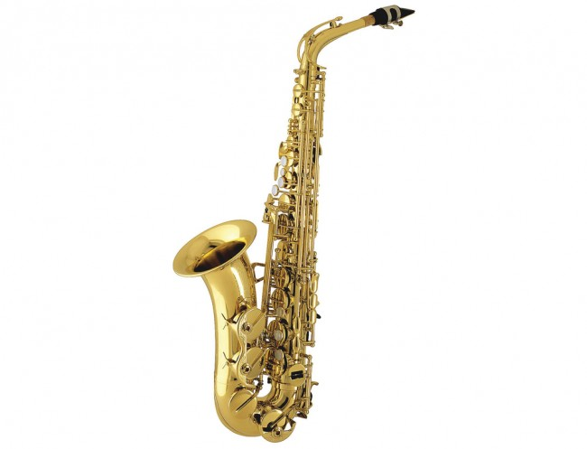

Tabla de instrumentos
| Guitarra | Piano | Bajo | Saxofon | Guitarra electrica | Violín | Violonchelo |
|---|---|---|---|---|---|---|
|  |
En esta zona se pueden diferenciar las distintas clases de instrumentos que determinados profesionales de la musica pueden elegir tocar dependiendo de su gusto por el instrumento que desean y con el mismo practicar las notas musicales que corresponden al instrumento seleccionado